Make any button, gesture or event do anything you want.
Add the repo, then search Triggr.
Like Activator, rebuilt for iOS 15 to 27. Pick a trigger, then what it does, in Settings → Triggr or the Triggr app. Nothing changes until you assign something.
- Triggers: buttons (presses, holds, combos and the Action Button), screen edges, the status bar, multi-finger gestures, shake, charger, headphones, Wi-Fi, Bluetooth, calls, music, notifications and times of day.
- Actions: switches, apps, Shortcuts, media, flashlight, screenshots, messages, menus, and sequences with If / Otherwise steps.
- Only If: run something only on your home Wi-Fi, while charging, between certain times, and more.
- Places: anywhere, on the Home Screen, in apps, on the Lock Screen, or in one app.
- Other tweaks can add their own triggers and actions.
- Version
- 2.0.0
- Jailbreak
- Rootless, RootHide
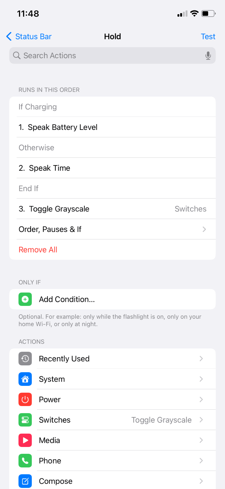
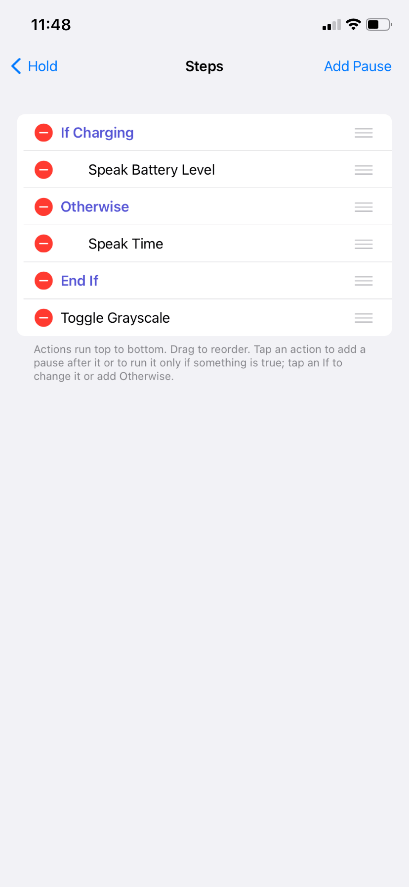
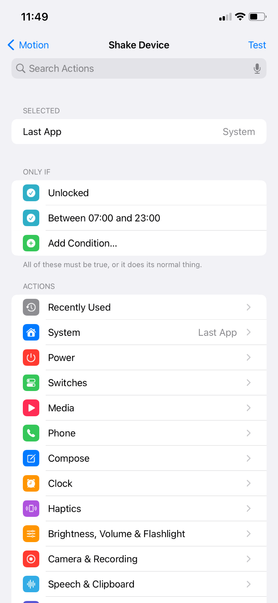
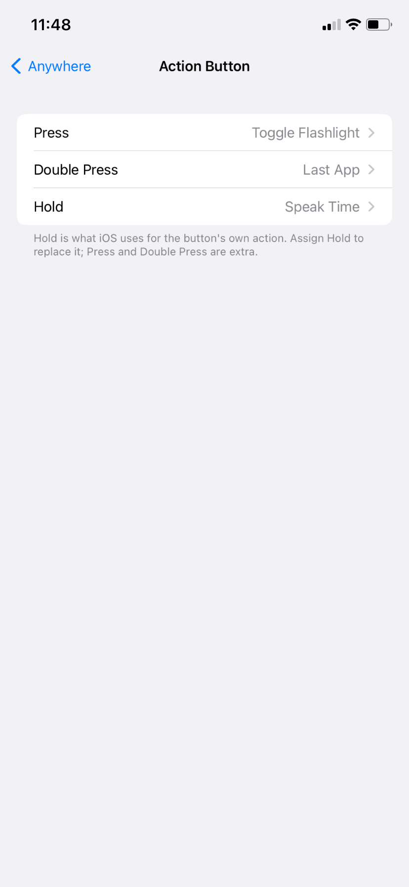
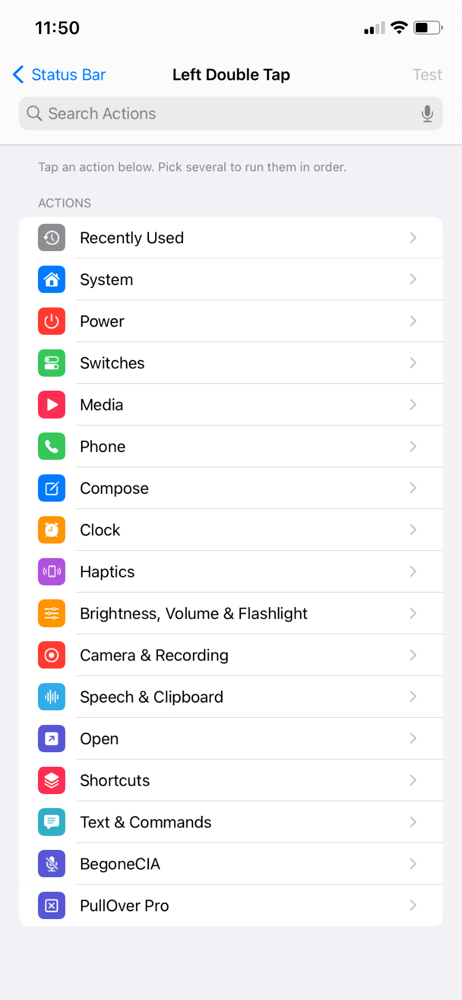
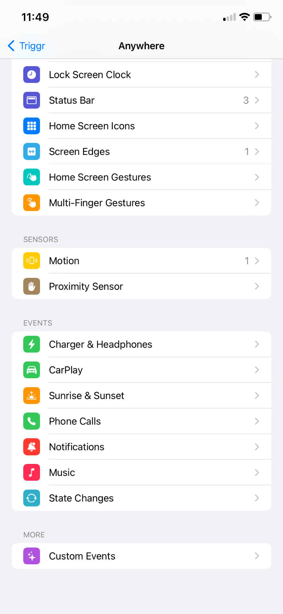
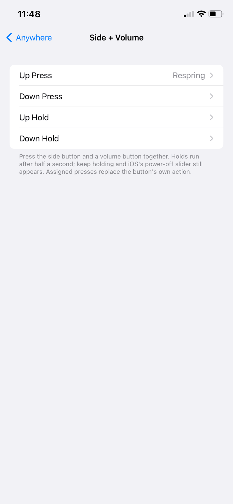
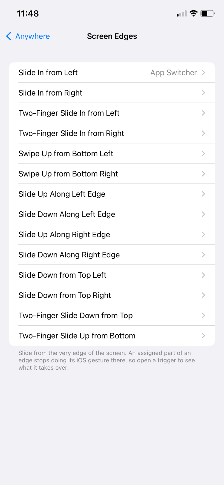
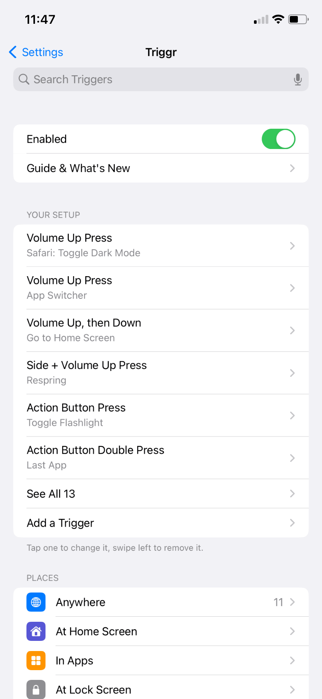
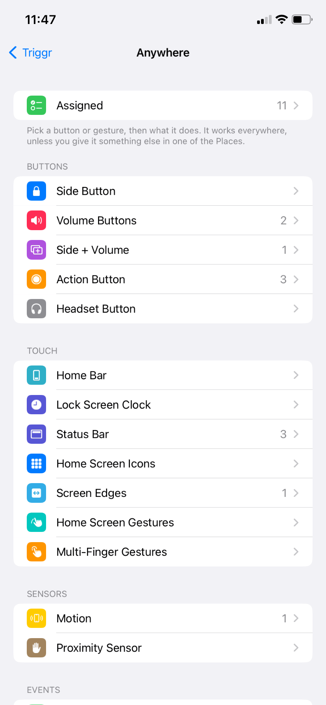
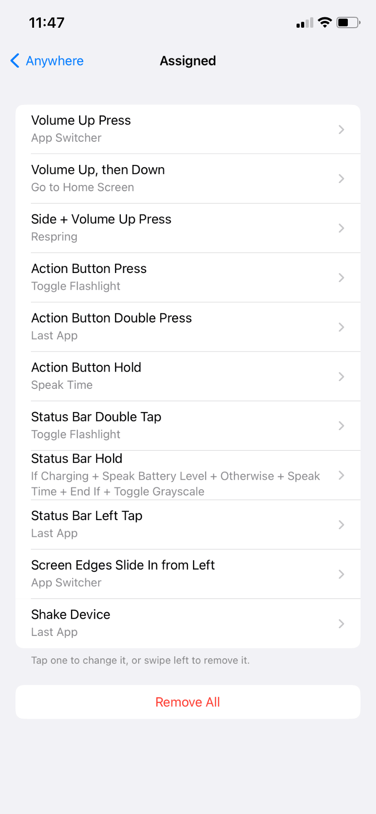
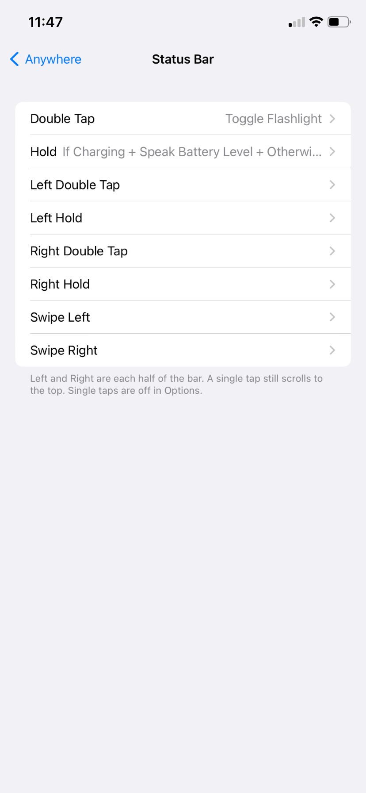
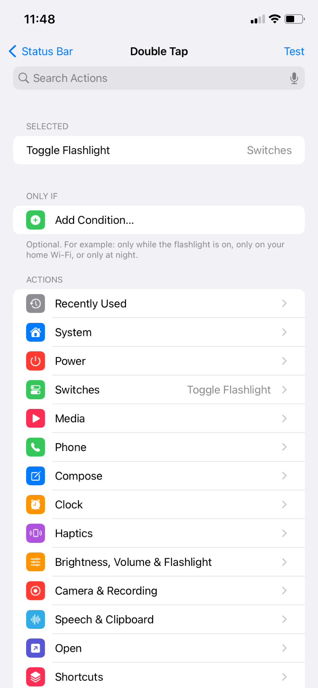
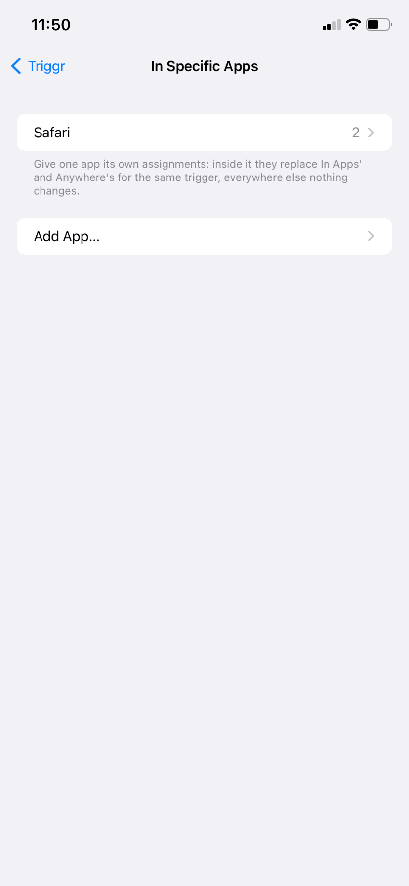
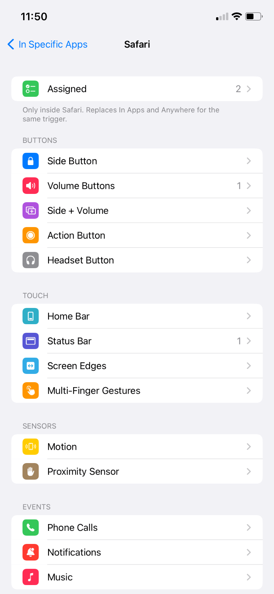
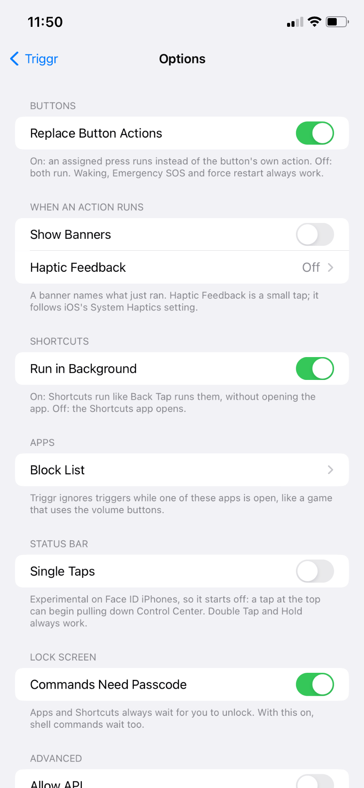
How it works
Triggr connects triggers (something you do, or something that happens) to actions (what runs). You pair them in Settings → Triggr or the Triggr app, and pick where each pair applies: anywhere, the Home Screen, in apps, the Lock Screen, or inside one app.
- A trigger only exists while something is assigned to it. An unassigned button, gesture or sensor is left alone.
- One trigger, many steps. A trigger can run a list of actions in order, with pauses, pop-up menus and If / Otherwise steps.
- Only If conditions are checked the moment a trigger fires: a Wi-Fi network, a Bluetooth device, charging, locked or unlocked, music playing, headphones, Low Power Mode, battery level, a time range, or the opposite of any of them.
- Buttons: an assigned press runs your action instead of the normal one, like Activator. To keep iOS's own action as well, add it to the list, or turn off Options → Replace Button Actions.
- No waiting on single presses. A short press only waits to see if it becomes a double press or a hold when one of those is assigned on the same button.
What it changes, and what it doesn't
- Changes: only the triggers you assign. Everything else behaves as it did before.
- Never touched: waking the phone, and Emergency SOS. Four or more lock button presses are left to iOS, and holding lock + volume still shows the power-off slider and SOS.
- Action Button: if SpringBoard crashes while Triggr is handling it, the button goes back to iOS.
Privacy and performance
- Nothing runs in the background for triggers you haven't assigned. Sensors, timers and gestures start only when assigned; the proximity sensor runs only while it's assigned and the screen is on.
- No network. Triggr doesn't listen on the network.
- Notifications: a notification trigger sees which app posted it, never what it says.
What's New in 2.0
Coming from 1.5? Here is what 2.0 adds.
- Only If and If / Otherwise: run something only on your home Wi-Fi, while charging, between certain times, when the flashlight is on, and more. Inside a list of actions, pick what happens either way.
- More triggers: multi-finger gestures in apps, the Action Button, slides along the screen edges, the Lock Screen clock, the home bar, the headset button, CarPlay, sunrise and sunset.
- More actions: record a video or a voice memo, make the flashlight brighter or dimmer, open phone and clock pages, Back, Unlock, a haptic tap, and Activator actions from other tweaks (no Activator needed).
- Shortcuts run in the background, the way Back Tap runs them, without opening the Shortcuts app.
- Safer buttons: a short press only waits when a longer trigger on the same button is assigned. If SpringBoard ever crashes while Triggr handles the Action Button, Triggr hands the button back to iOS.
- A simpler Settings page: Your Setup lists what you assigned in plain words, and Guide & What's New explains everything with ideas to try.
- iOS 27 support, plus a RootHide version.
- For developers: libtriggr lets other tweaks add their own triggers and actions.
Every version's notes are in the Changelog tab.
Works on
- iOS 15 to 27. Rootless and RootHide jailbreaks.
- Tested by hand on an iPhone 7 (iOS 15.8.6), iPhone 8 Plus (16.7), iPhone 11 Pro Max (16.2), iPhone SE 2nd gen (17.5.1) and iPhone 11 Pro (18.6.2), and in virtual iPhones on iOS 18, 26 and 27.
- Not verified yet: RootHide on a real phone. It has been checked in a virtual iPhone.
- If it ever sends your phone to Safe Mode, open Sileo (it still works there) and uninstall Triggr, or go back to 1.5. Then tell me.
For developers
- libtriggr (MIT) lets your tweak add its own triggers and actions, plus a "Configure via Triggr" button. Docs
- Action extensions: add a category of actions with a single plist, like EQELinker does. EXTENSIONS.md
- API and command line, off by default: run actions, triggers and menus from tweaks, scripts or Shortcuts (over SSH), for example
triggr run toggle.flashlight.
Good to know
- Bugs and ideas: github.com/Jond-ie/triggr/issues.
- Triggr 1.x is open source (GPL-3.0) on GitHub. From 2.0 on, Triggr is closed source; libtriggr stays open source.
Credits
Original work by Jond_ie, inspired by Activator (Ryan Petrich). App pickers by AltList (opa334). Snapper 3 and CopyLog actions by qnblackcat.
Changelog14 earlier versions
2.0
Out of beta. New since Beta 9:
- Flashlight Brighter and Dimmer actions, and a Flashlight On / Off condition. For example: while the flashlight is on, the volume buttons change its brightness.
- Record Video and Record Voice Memo: opens the app and starts recording. Run it again to stop.
- A rebuilt Settings page: Your Setup (what you assigned, in plain words, swipe to remove), Add a Trigger, and a new Guide & What's New page.
- iOS 27: fixes for the App Switcher, Control Center, the Lock Screen, Last App and the Camera and Voice Memos actions. Tested in an iOS 27 virtual iPhone.
- Status bar double taps work in apps on iOS 26 and 27.
- The
triggrcommand works on iOS 27 (it couldn't see the Allow API setting before). - RootHide version added.
2.0 Beta 9
- Fixed: with an Action Button press assigned, the next press could crash SpringBoard (Beta 8). Triggr now lets iOS finish every press properly. Thanks for the crash log.
- Getting ready for iOS 27: the Action Button, edge gestures, App Switcher and Reachability now find their new iOS 27 names. Not tested on iOS 27 yet.
2.0 Beta 8
- Action Button: a fix for SpringBoard going into Safe Mode when an Action Button press was assigned (Beta 6 to 7.1). iOS now lets go of the button itself. Please tell me if it still happens.
- Shortcuts run in the background, the way Back Tap runs them: no Shortcuts app popping up. Turn it off in Options if you want the app.
- Pick a Shortcut from a list. The new Shortcuts section shows all of yours, so you don't have to type names.
- Tweak Actions: many tweaks still carry their old Activator actions. Activator can't be installed on Rootless, so Triggr now runs those actions itself (made for Snapper 2).
- Press Volume Up / Down: works like pressing the real button, so the volume bar shows and volume mixer tweaks react.
- Soft haptic feedback.
- Fixed: the Mute Switch trigger did nothing on iOS 17 and 18, Proximity (Cover / Wave) did nothing on iOS 15, and Spotlight was missing on iOS 18. Found by checking every trigger and action against iOS 15, 16, 17 and 18.
Thanks to nbaib (soft haptics, volume buttons), alexp4re (Shortcuts) and the Reddit testers (Action Button, Snapper 2).
2.0 Beta 7.1
- Fixed: opening Options in Beta 7 crashed Settings. 7.1 fixes it. Sorry about that.
- Everything in Beta 7 (haptic feedback, bottom-corner swipes, Snapper 2) is unchanged.
2.0 Beta 7
- Haptic feedback. A small tap every time an action runs: Options → Haptic Feedback (Off, Light, Medium or Strong; off by default). It follows iOS's System Haptics setting.
- Swiping up from the bottom corners no longer scrolls the page behind it. The bottom zones now take the touch from the app, like iOS's own gestures. I can only test that with a real finger on a Face ID iPhone, so tell me if it still happens.
- Snapper 2: Triggr only knows Snapper 3, so the Snapper 3 actions are hidden when only Snapper 2 is installed (they did nothing).
Thanks to the Reddit user on an iPhone 13 mini for the feedback.
2.0 Beta 6
- Action Button: with Press, Double Press or Hold assigned, the side button (Lock) could stop working. Fixed. I can't test an Action Button iPhone myself, so please tell me how it goes.
- Press, Double Press and Hold are all confirmed working on an iPhone 15 Pro Max (iOS 17.3).
Thanks to the Reddit user who reported it.
2.0 Beta 5
- Slide along a screen edge. New triggers: slide up or down along the left or right edge. Start at the edge and make a quick, straight stroke about a fifth of the screen long. A slow drag, like scrolling with your thumb, doesn't count. A fast flick from the edge can, so pick actions that are fine to run by accident.
- iOS 15 on A12 and newer (iPhone XS, XR, 11 and later) should work now. Triggr used to crash or freeze SpringBoard there. I can't test that phone myself, so please tell me how it goes.
- Action Button: Press is confirmed working on an iPhone 15 Pro Max (iOS 17.3). Double Press and Hold are still untested.
Thanks to nbaib for the edge slide idea, the0731 for the iOS 15 report and logs, and the Reddit user who confirmed the Action Button.
2.0 Beta 4
- Mute and volume work on iOS 17 and newer. The Mute actions (Toggle, On and Off) and Volume Up / Down did nothing there, because iOS 17 changed how Triggr reaches them. Tested on iOS 17.5.1.
- Nothing changes on iOS 15 and 16.
- The Action Button is still experimental.
Thanks to cuucondiep on Reddit for the report.
2.0 Beta 3
- Scheduled times run every day again. They could run once and then skip days, because the timer stopped while the phone slept. They now use the same kind of timer as alarms, which wakes the phone on time.
- Multi-finger gestures no longer fire while you type fast. Triggr ignores the keyboard, so two thumbs typing don't count as a two-finger tap or swipe.
- RootHide: a RootHide build of every release is now on GitHub (untested, feedback welcome).
Thanks to everyone on Reddit who reported these.
2.0 Beta 2
- Snapper 3 actions: New Snap, Instant Snap, Freeze Screen & Snap, Reopen Last Snap, Snap History, Cancel Cropping, Close All Snaps.
- CopyLog actions: Show CopyLog, Show CopyLog Favorites.
- Both groups only show while that tweak is installed. Contributed by qnblackcat (thank you). Untested here: feedback welcome.
2.0 Beta 1
A beta: please report anything odd (Notes below). You can go back to 1.5 any time in Sileo.
- Only If: conditions on any assignment: Wi-Fi network, charging, battery, time range, locked, and more, plus "still true after N seconds".
- If / Otherwise steps inside a sequence.
- Multi-Finger Gestures that work inside any app: two- and three-finger taps and swipes, pinch in / out (per app too, under In Specific Apps). Try two fingers → Take Screenshot.
- Swipe Up from Bottom left / middle / right. While one is assigned, that part of the edge no longer opens Control Center or goes Home.
- Action Button (iPhone 15 Pro and newer): Press, Double Press and Hold. Experimental, not tested on one yet: reports very welcome.
- New actions: Grayscale, Smart Invert, Classic Invert and Zoom switches; Speak Time, Speak Battery Level, Speak Clipboard, Clear Clipboard; Show Text banner.
- libtriggr: other tweaks can add their own triggers, actions and a "Configure via Triggr" button. BegoneCIA's next update is the first to use it.
- Fixes: the flashlight turns on at your Control Center level instead of the dimmest one; "Spread" is now called Pinch Out.
1.5
- Lock / Side + Volume: press the lock (side) button with Volume Up or Down, or hold them, as four new triggers. A press can replace the screenshot on Face ID iPhones; holding still brings up the power-off slider and Emergency SOS.
- Screen edges: slide in from the left or right edge, also with two fingers like Activator, so apps keep their swipe back.
- Phone calls: incoming, answered, outgoing and ended, for the Phone app, FaceTime and other calling apps.
- Music: playback started, paused or stopped, and song changed, for any app in Now Playing.
- Any notification, weekly schedules (a time on chosen days) and Brightness Up / Down by a step you pick.
- Fix: a Respring or Safe Mode run from a Volume Up trigger no longer lands in Safe Mode by accident: it waits until you let go of the button.
1.0.4.1
- Fixes a crash when opening a trigger's action list (in Settings and in the Triggr app) if no Triggr extension is installed. It hit every install without EQELinker, on Dopamine and RootHide. Thanks to 777qwq for tracking down the cause.
1.0.4
- The Triggr app on your Home Screen, plus trigger search, Recently Used actions and a Test button.
- iOS 18 and Face ID: the side button's Single / Double / Triple Press work properly, and an assigned Double or Triple Press replaces Wallet or the Accessibility Shortcut. Commands and extension actions run through a small helper on iOS 18.
- New triggers: status bar left / right halves and swipes, Home Screen gestures, proximity sensor, a notification from an app.
- In Specific Apps: give one app its own assignments.
- Options → Status Bar Single Tap (off by default on Face ID iPhones).
- Extensions: other packages can add actions, like EQELinker for EQE presets.
- Tidier places (one Assigned row), and picking another option of the only switch picked replaces it.
- Fixes: status bar taps on the Home Screen on iOS 17+, saved Wi-Fi networks and Bluetooth devices in the app.